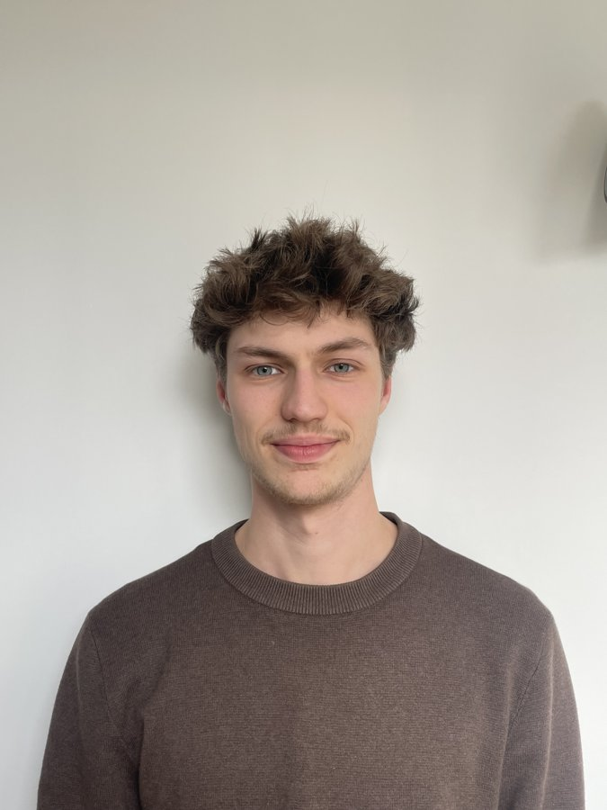
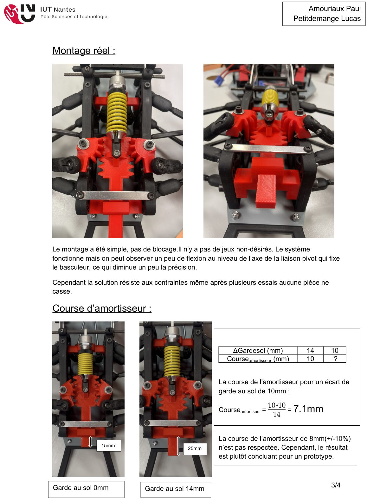
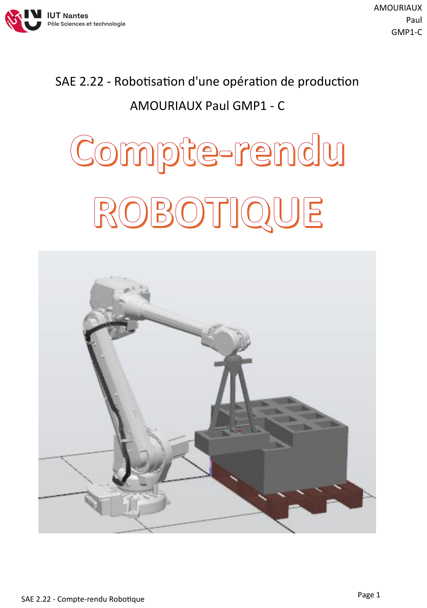
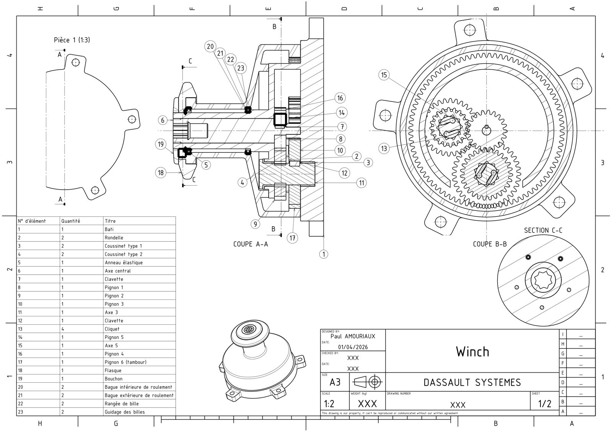

Étudiant en BUT Génie Mécanique et Productique — IUT de Nantes
🤝 En alternance chez Bugal · septembre 2026 → août 2028Passionné de mécanique, de la conception CAO jusqu'à l'usinage, je me forme au métier de technicien en génie mécanique à l'IUT de Nantes. Bricoleur et curieux, j'aime autant modéliser une pièce sur Catia que la voir prendre forme sur une fraiseuse. En dehors de l'atelier : réparations mécaniques, pratique sportive et bénévolat au Club Athlétique Nantais, et voyages itinérants à vélo.
Dessin industriel, CAO sur Catia et 3DEXPERIENCE, mises en plan normalisées, prototypage par impression 3D.
Tournage, fraisage, programmation d'usinage sur fraiseuse à commande numérique, méthodes de fabrication et soudure.
Métrologie, contrôle de pièces avec Machine à Mesurer Tridimensionnelle, vérification et dimensionnement des liaisons.
IUT de Nantes — dessin industriel, CAO, métrologie, méthodes, production, automatismes, organisation industrielle.
Lycée Gabriel Guist'hau, Nantes — Mathématiques, Physique-Chimie, option Mathématiques Expertes.
Réglages machine, usinage (tournage / fraisage), métrologie.
Préparation de commandes, gestion des stocks, relation client.
Trois projets menés à l'IUT de Nantes, de l'analyse fonctionnelle à la réalisation, détaillés à partir de mes comptes-rendus.

Conception CAO et prototypage par impression 3D d'un système de suspension à basculeurs pour châssis de F1 radiocommandée, testé en conditions réelles.
Découvrir le projet →
Robotisation d'une opération de manutention de briques : conception du préhenseur, simulation de la cellule sur RobotStudio et analyse technico-économique.
Découvrir le projet →
Conception complète d'un winch : train d'engrenages à deux vitesses, cliquets anti-retour, mises en plan et notice de calcul de dimensionnement des liaisons.
Découvrir le projet →À partir de septembre 2026, je serai en alternance chez Bugal.
Une question, un projet ? Je serais ravi d'échanger avec vous.